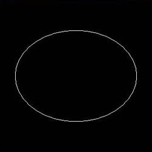
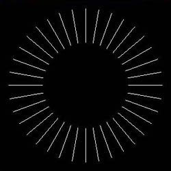
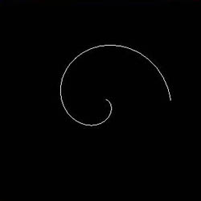
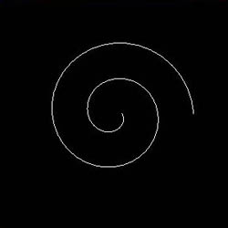
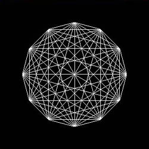
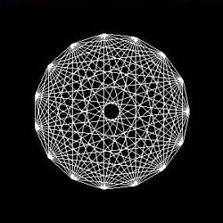
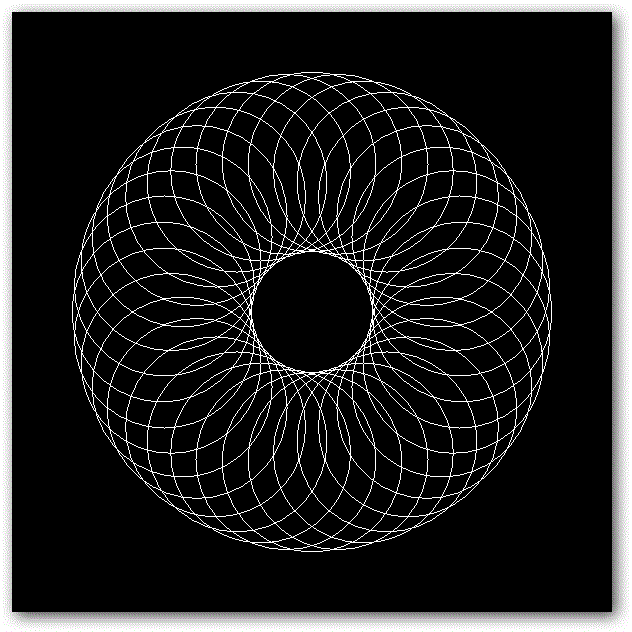
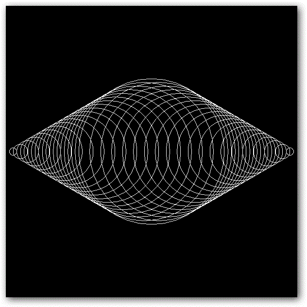

2次元図形を描く -- 円 --
準備
本章はもとの授業資料の第一回 ２次元図形を描く--線・円-- の後半に対応します。
このリポジトリからファイルをダウンロード, 解凍したらsample.xcodeproj を開き、実行できるか確認してください。
プログラムの解説
円を描いている部分はdisplay関数内にあります。
void display(void)
{
float x1,y1,x2,y2; //２点の座標
float th1,th2; //角度（度）
float th1_rad, th2_rad; //角度（ラジアン）
float hankei = 0.7f; //半径
// th1 が一周する
for (th1 = 0.0; th1 <= 360.0; th1 = th1 + 10.0)
{
th2 = th1 + 10.0; // th1 のすすみ文
// ラジアンに変換
th1_rad = th1 / 180.0 * 3.1415926;
th2_rad = th2 / 180.0 * 3.1415926;
// x-y 座標を求める
x1 = hankei * cos(th1_rad);
y1 = hankei * sin(th1_rad);
x2 = hankei * cos(th2_rad);
y2 = hankei * sin(th2_rad);
// 直線をひく
glBegin(GL_LINES);
glVertex2f( x1, y1 );
glVertex2f( x2, y2 );
glEnd();
}
}
このプログラムでは、短い直線をつないでいくことで円を描いています。x-y 座標上で、半径r の円は
ですが、これは極座標ではrが定数であり、θ は全領域 (なので実質
) を走るという条件になります。
このプログラムでは、θを少しずつ変化させながら次の関係を用いてx, y 座標を割り出し、 それらの点をつないでいっています。
直交座標と極座標の変換:
,
円の一部となる短い一本の直線を引くために、片端の角度th1と、その10度先の角度th2という変数を用います。for文の中ではth1が0 ~ 360度まで動き、円を一周します。これらの極座標値からさっきの関係式を用いて2点(x1, y1), (x2, y2)を求め、最後にglVertex2fで直線を引いています。
最後に、注意点が2つあります。
- 数学関数の
sin,cosに渡す値の単位はラジアンである - それぞれの直線が繋がるためには、
th1の進みと同じだけth2をずらす必要がある (ここでは10度)
後者は、th2は一つ隣のth1と同じになると言い換えることもできます。
課題
円を描くプログラムを変更して、 下図のような図形を作って下さい。
       
最後に、よろしければslack のほうに完成した画像をアップしてください。